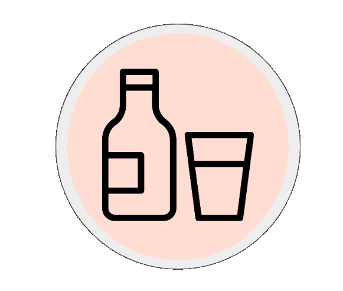

Consumo de Alcohol
Existe una relación causal entre el consumo nocivo de alcohol y una serie de trastornos mentales y comportamentales, además de las enfermedades no transmisibles y los traumatismos (OMS, 2022). Además, Chile se sitúa en el primer lugar en cantidad de consumo de alcohol per cápita al año, con un total de 9,6 litros de alcohol puro per cápita en adultos (SENDA-MINSAL, 2016)
¿Cómo es el consumo de alcohol en Chile?
